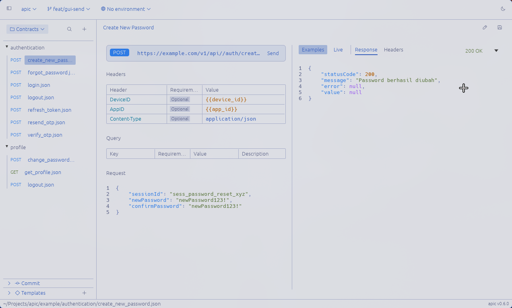
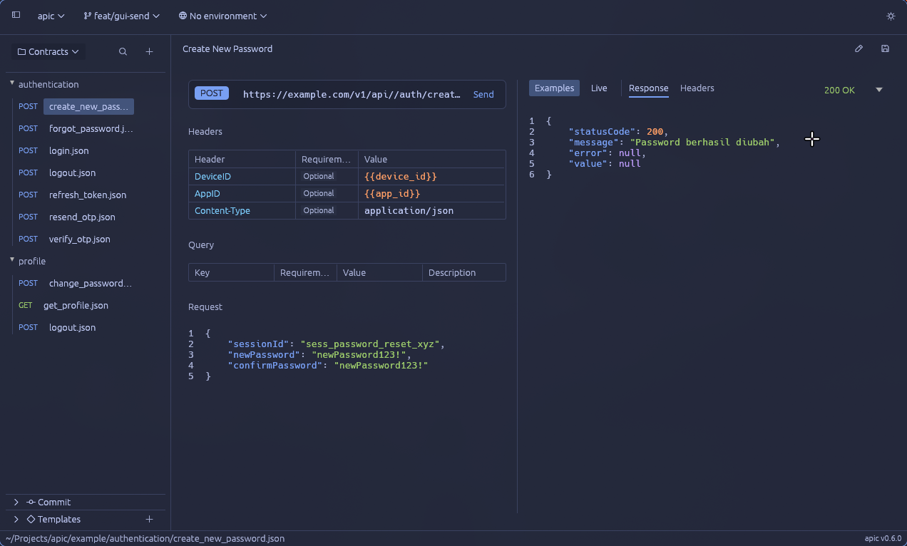
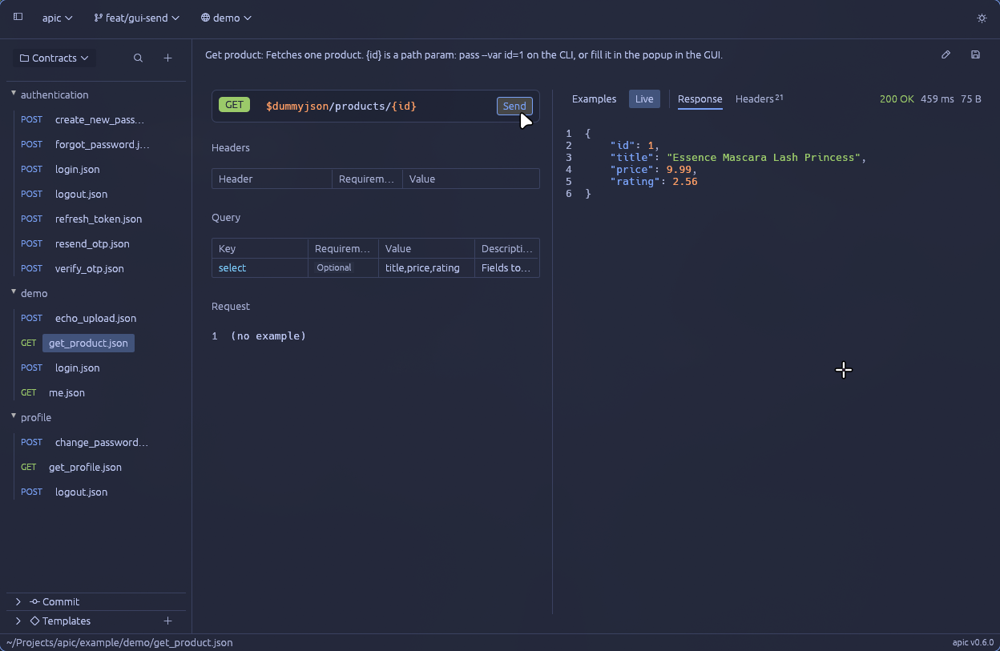
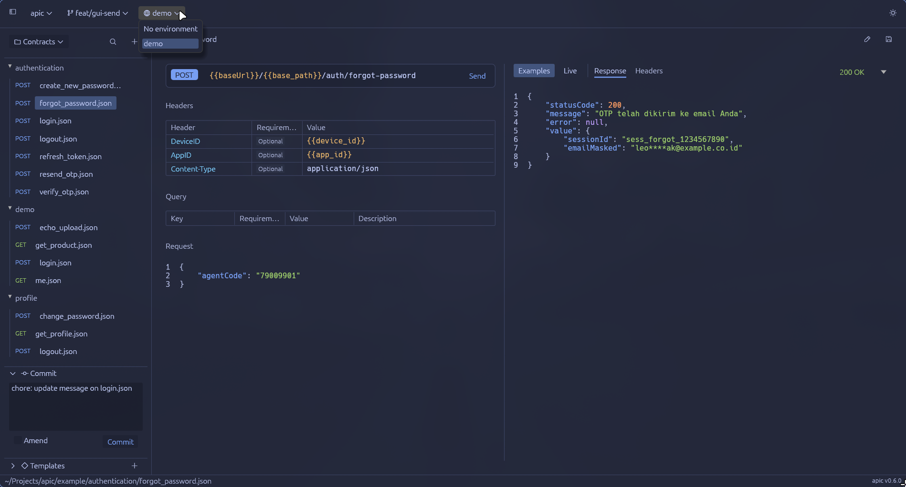
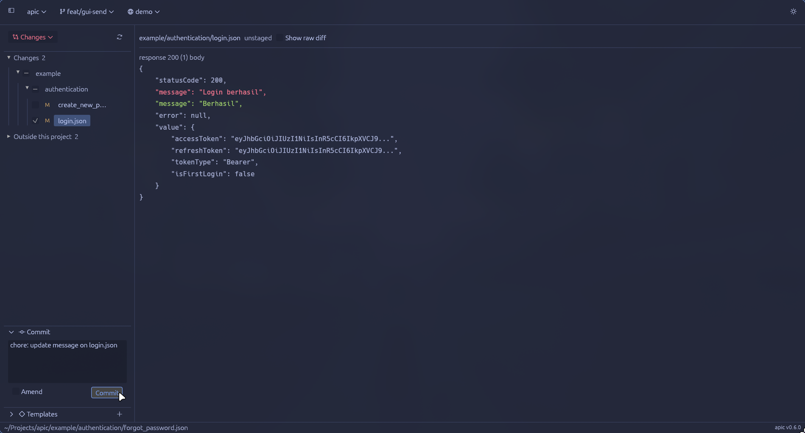

Git-Native API contracts and client
No seats, no workspaces behind a paywall. Collaboration made easy and free for everyone.
$ cargo install apic-cli
Star on GitHubOther ways to install


$ apic create -f orders/create
Writes one JSON file per endpoint, in the folder you name. It starts from your team’s template, so the base URL and headers are already there.
{
"name": "create",
"method": "POST",
"url": "https://api.example.com/orders",
"request": { "sku": "tee-black-m", "qty": 2 },
"responses": [
{ "code": 201, "description": "Created" }
]
}$ git diff
Adding an error response is a four-line change. Your team reviews it in the pull request, next to the code that returns it.
@@ -23,6 +23,10 @@
{
"code": 201,
"description": "Created"
+ },
+ {
+ "code": 409,
+ "description": "Conflict"
}
]$ apic send -f products/get --env demo
Sends the request with values from .apic/env/demo.toml and prints the reply. Local secrets stay in a gitignored file.
HTTP 200 OK 491 ms
{"id":1,"title":"Essence Mascara Lash Princess","price":9.99}
$ apic-gui
The same files in a desktop app. Edit tables and JSON, then commit the change without leaving the window.


Install
| Arch | yay -S apic-bin | |
|---|---|---|
| Fedora | sudo dnf copr enable rizukirr/apic && sudo dnf install apic-cli apic-gui | |
| Flatpak | flatpak install io.github.rizukirr.apic | |
| Windows | winget install rizukirr.apic rizukirr.apic-gui | |
| Cargo | cargo install apic-cli apic-gui |
Prebuilt archives with checksums for Linux, macOS and Windows are on the releases page.
Docs
- CommandsEvery command, flag and example.
- Contract formatThe JSON schema, templates and config.
- SendingEnvironments, variables and apic send.
- Desktop appEditing, Postman import and git.